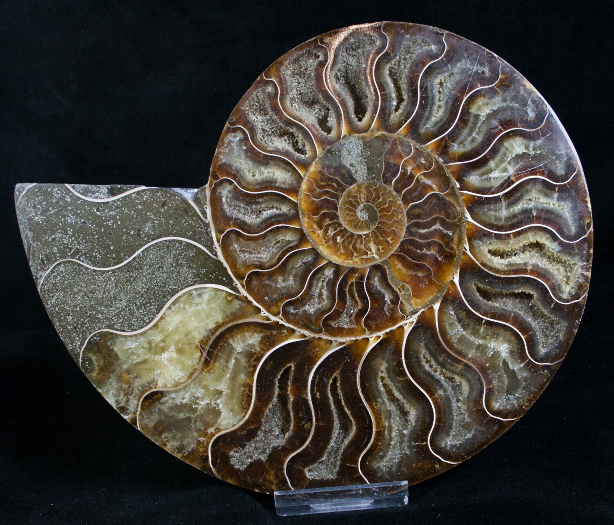

Why Morocco?
World's Fossil Capital
Morocco is one of the world's richest fossil sites, particularly around Erfoud and the Sahara Desert. 350 million years ago, this was the bottom of an ancient ocean called the Tethys Sea. Today, the extreme desert dryness perfectly preserves these incredible specimens.
What You'll Find
Trilobites: Ancient sea creatures (300-500 million years old)
Ammonites: Spiral-shelled mollusks (100-400 million years old)
Orthoceras: Straight-shelled squid ancestors (350 million years old)
Meteorites: Agoudal iron meteorites (40,000+ years old)
The Industry
50,000+ Moroccans earn their living from fossil trade
£40+ million annual industry
World-renowned for quality specimens
BUT: Also famous for fakes!

On Your Route
Best Places to Buy
🏆 #1 BEST LOCATION: Erfoud/Rissani (Day 5 - April 3)
Why here: Erfoud is Morocco's "Fossil Capital" - the epicenter of the industry
When: Your drive from Merzouga to N'kob passes RIGHT through Rissani (~10:30-11:00am)
Time needed: 45-90 minutes for browsing + purchasing
Recommended Shops in Rissani/Erfoud
Mezane Fossil Store
Location: Main road between Erfoud and Rissani
Why: Family business, fair prices, not a tourist trap
Features: Workshop tour, preparation demonstration
Rating: Highly recommended on TripAdvisor
Tahiri Museum of Fossils
Location: Erfoud (15 min from Rissani)
Features: Museum + shop, impressive collection
Range: All price points from £5 to £500+
Fossiles d'Erfoud
Location: Erfoud
Features: Active workshop, outdoor fossil area
Bonus: See stone cutting & polishing process
⚠️ Where NOT to Buy:
Avoid: Roadside stalls on Tizi n'Tichka Pass (high fake percentage, tourist trap pricing)
Be cautious: Random Marrakech souk shops (mixed quality, hard to verify)
Skip: High-pressure sellers or anywhere you feel rushed

Mezane Fossil Store - Recommended shop on the Erfoud/Rissani road
Shopping Guide
What to Buy (& Prices)
Best Souvenirs for Beginners
| Item | Description | Price Range | Best For |
|---|---|---|---|
| Orthoceras Pendant | Small fossil on necklace/keychain | £5-15 | Wearable, hard to fake, great gift |
| Small Ammonite | 2-5cm spiral shell | £10-30 | Classic display piece |
| Simple Trilobite | Common species, well-prepared | £30-100 | Iconic fossil, conversation starter |
| Fossil Bowl/Plate | Functional art with embedded fossils | £20-80 | Practical + beautiful |
| Orthoceras Wall Slab | Polished black marble with fossils | £60-250 | Wall art (see below!) |
| Agoudal Meteorite | Small iron meteorite fragment | £30-150 | Actual space rock from Morocco! |
| Large Sliced Ammonite | 15-30cm polished cross-section | £80-300 | Stunning display piece, wall art |
Authentication
How to Spot Fake Fossils
🚨 The Fake Problem is HUGE
Morocco produces both the world's BEST authentic fossils AND a massive fake industry. Fakes are everywhere, but they're also easy to spot if you know what to look for!
The 8 Essential Tests
1. The Tooth Test ⭐
Most Reliable!
How: Gently tap fossil on your front teeth
Real: Hard like stone, solid feel
Fake: Soft like plastic, "gives" slightly
Why: Resin/plaster much softer than mineralized fossil
2. Weight Test
How: Pick it up - does it feel as heavy as expected?
Real: Heavy, dense, stone-like
Fake: Surprisingly light (resin/plaster)
3. Look for "The Line"
Red flag: Clean separation line around fossil
Why: Fakes are molded separately then glued into rock
Real: No obvious line, integrated into matrix
4. Check for Air Bubbles
Look at: Surface of fossil AND surrounding matrix
Fake giveaway: Tiny air bubbles (resin casting defect)
Real: No bubbles in mineralized stone
5. Color Check
Moroccan trilobites: Black, dark brown, or olive
Fake indicators: Brownish with unnatural shine, too uniform, glossy plastic look
6. Detail Inspection
Real trilobites: Fine spines, visible eyes, imperfections, natural variations
Fake: Too perfect, smooth eyes, "drawn" edges, perfect symmetry
7. Price Reality Check
If too good to be true, it is!
Real spiny trilobites: £1,000-5,000+
Fakes of same: £100-500
Takes 100+ hours to prepare real ones properly!
8. Ask the Dealer
Good question: "Is this restored?"
Good dealers: Explain honestly, show workshop
Bad dealers: Get defensive, claim "100% natural, very rare!"

Home Display
Wall-Hanging Fossil Art
🖼️ Perfect Wall-Display Option: Orthoceras Plates
What they are: Ancient squid-like creatures (350 million years old) embedded in polished black marble slabs, ready to hang on your wall like artwork!
🐚 Alternative: Large Sliced Ammonites
What they are: Ammonites cut in half and polished to reveal stunning spiral chamber structure. Makes spectacular wall art!
Thickness: 1-3cm (similar to orthoceras plates)
Weight: 1-2kg for 20cm, 3-4kg for 30cm
Mounting: Flat back from the cut makes mounting easy - ask shop for D-rings or use heavy-duty picture hangers
Price: £80-300 depending on size
Tip: Smaller ones (15-20cm) work with standard picture hooks. Larger specimens (25-30cm+) need wall anchors due to weight.
✅ Bonus: Hard to fake! Sliced ammonites are one of the safest fossil purchases because the internal chamber structure is nearly impossible to replicate convincingly. The crystalline fill (calcite/pyrite), intricate suture patterns, and natural weight are all very hard to fake. Still do the tooth test and check for composite pieces (seam lines), but these are much safer than trilobites.
Wall-Display Specifications
Small (Travel-Friendly)
Size: 25 × 35cm
Thickness: 1cm
Weight: ~1kg
Price: £30-50
Packing: Fits in suitcase diagonally
Medium (Recommended)
Size: 40 × 60cm (A2 poster size)
Thickness: 1.5-2cm
Weight: 2-3kg
Price: £60-100
Packing: Ship it! (£40-50 shipping)
How to Mount & Hang
Step 1: Check What's Included
Many plates come with hanging wire or D-rings already attached. Ask the shop when buying!
Step 2: If You Need to Add Hardware
For 2-3kg plates: Use 2× D-ring hangers screwed into back edges
Thread picture wire between them
Use standard picture hooks on wall (rated for 5kg+)
Step 3: Wall Mounting
Find wall studs for heavy pieces (5kg+)
For lighter pieces (2-3kg): Standard picture hooks in drywall are fine
Use level to ensure straight hanging
Hang at eye level (center of art ~152cm from floor)
Step 4: Care & Cleaning
Wipe with damp cloth occasionally
Polish with furniture wax for extra shine (optional)
Keep away from direct sunlight (can fade over years)
✨ Why Orthoceras Wall Plates are Brilliant
🎨 Art + science combined
🌍 Authentic Moroccan souvenir
⏰ 350 million years old (!)
💬 Amazing conversation starter
🖼️ No frame needed (polished edges)
🪝 Easy to hang (standard hooks)
💎 Timeless decor (never goes out of style)
🧹 Easy to clean (just wipe)
Shipping vs Carrying
| Option | Pros | Cons | Cost |
|---|---|---|---|
| Carry Small Plate | Take home immediately, no shipping wait | Luggage space, breakage risk, weight limit | £0 extra |
| Ship Medium/Large | No luggage hassle, fully insured, arrives safely | 2-4 week wait, shipping cost | £40-80 |
Note: Fossil shops ship worldwide routinely. They pack professionally with bubble wrap, foam, and sturdy boxes. Fully insured shipments.
From Space!
Agoudal Iron Meteorites
🌠 What Are They?
Real meteorites from space found in the High Atlas Mountains near Agoudal village (Morocco's highest village at 2,300m altitude!)
Age: 40,000+ years old
Composition: Iron-nickel (5.5% nickel, 4.1 mg/g cobalt)
Classification: IIAB Iron (hexahedrite)
Discovery: 2000 (initially sold to tourists unknowingly!), recognized in 2011
Impact site: Created 3km crater + shatter cones (now eroded)
Meteorite Buying Guide
| Size | Weight | Price Range | Best For |
|---|---|---|---|
| Small fragment | 1-10 grams | £15-60 | Starter collectors, gifts |
| Medium piece | 10-40 grams | £60-150 | Display specimens |
| Large specimen | 40-100+ grams | £150-380+ | Serious collectors |
How to Verify Authentic Meteorites
1. Magnet Test ⭐
Real: VERY strongly magnetic (it's iron!)
Fake: Not magnetic or weakly magnetic
2. Weight Test
Real: VERY heavy for size (dense iron-nickel)
Fake: Lighter (terrestrial rock or composite)
3. Appearance
Real: Natural patina, irregular shape, thumbprint depressions
Fake: Too perfect, painted, suspiciously symmetrical
4. Documentation
Always ask for: Certificate of authenticity stating "Agoudal (Imilchil), IIAB Iron, Morocco"
⚠️ What About Tektites (Impact Glass Spheres)?
You may see dark black spherical "balls" (~3cm) sold in shops. These are Indochinite tektites from Vietnam, NOT from Morocco! They're legitimate impact glass (700,000 years old, formed by meteorite impact in Southeast Asia), but they're imported to Morocco for tourist trade. If you want something actually FROM Morocco, stick with Agoudal meteorites or fossils!
Pro Tips
Your Shopping Strategy
Day 5 (April 3) - Fossil Shopping Plan
09:30 - Depart Merzouga
10:30-11:30 - STOP: Rissani - Mezane Fossil Store
Spend 45-60 minutes:
- Watch fossil preparation demonstration (5-10 min)
- Browse selection (15-20 min)
- Test potential purchases (tooth test, weight, inspection) (10 min)
- Negotiate prices (start at 50% of asking) (10 min)
- Complete purchase + arrange shipping if needed (10 min)
Optional: Continue 45 min to Erfoud for more selection (adds 1.5 hours total)
Negotiation Tips
DO:
✅ Start at 50% of asking price
✅ Be friendly and respectful
✅ Ask about restoration honestly
✅ Take your time, don't rush
✅ Buy multiple items for better deal
✅ Ask about shipping/packaging
DON'T:
❌ Accept first price
❌ Feel pressured to buy
❌ Skip authenticity tests
❌ Buy from random roadside stalls
❌ Forget to get certificate
❌ Buy "investment pieces" impulsively
Customs & Transport
Bringing Fossils to UK
✅ UK Customs Allowances
Fossils: Generally allowed (not CITES protected)
Meteorites: Allowed (not restricted)
Declaration: Required if total value >£390
Documentation: Keep all receipts and certificates
Packing Tips
Small Fossils/Pendants
✅ Carry-on or checked luggage
Wrap in tissue/bubble wrap
Place in sturdy box
Pack in center of suitcase
Medium Specimens
✅ Checked luggage only
Wrap in bubble wrap THEN clothing
Center of suitcase (cushioned)
Mark "FRAGILE" if possible
Wall Plates/Large Items
✅ SHIP IT!
Shop arranges professional packing
Fully insured
Arrives 2-4 weeks
Cost: £40-80